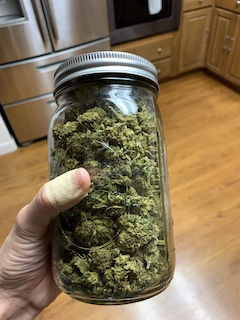

<!doctype html>
<html>
<head>
<meta charset="UTF-8">
	<link href="css/jobaid.css" rel="stylesheet">
<title>Lab 1: Job Aid
</title>
</head>

<body>
</body>
</html>

<div id="header">
       <h1> How to Make Cannabis Tincture </h1>    
       <h2> By  Caitlin Binder </h2>  <br>
    </div>
<div id="step1">
<h3> <p> Once upon a time, marijuana usage was limited to smoking, with the occasional consumable brownie for those willing to put in the work. The statewide legalization of recreational marijuana in California led to a boom in the number of cannabis stores (dispensaries). There is now a wide variety of cannabis products made from marijuana flower. The underlying processes required to make these products can be better understood through basic chemistry, allowing cannabis consumers to make safer, more well-informed decisions about their purchases and consumption. </p> </h3>
		<div class="stepTitle">
   Step 1: Prepare the Cannabis Flower
		</div>
<br>
		<div class="stepContent">

		<div class="stepDescription">
<p> Visit your local dispensary or otherwise obtain your flower-of-choice. <p> </p>In this procedure, you will discard much of the plant material, thus high-quality flower is not necessary - it is ok to use the cheaper materials. </p> <p> This recipe calls for 5 grams of flower, but you can use more or less, as desired and available. </p>   <p>Grind the flower and place in a glass or aluminum pie plate, then cover tightly with foil. </p>
   		       </div>

		<div class="stepImage">
  
		</div>

		</div><!--stepContent-->

    </div><!--step1-->
<div class="stepTitle">
   Step 1: Prepare the Cannabis Flower
		</div>
<br>
		<div class="stepContent">

		<div class="stepDescription">
<p> Visit your local dispensary or otherwise obtain your flower-of-choice. <p> </p>In this procedure, you will discard much of the plant material, thus high-quality flower is not necessary - it is ok to use the cheaper materials. </p> <p> This recipe calls for 5 grams of flower, but you can use more or less, as desired and available. </p>   <p>Grind the flower and place in a glass or aluminum pie plate, then cover tightly with foil. </p>
   		       </div>

		<div class="stepImage">
  
		</div>

		</div><!--stepContent-->

    </div><!--step1-->

